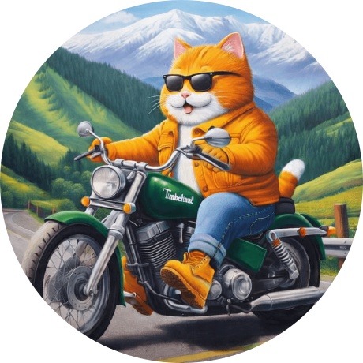
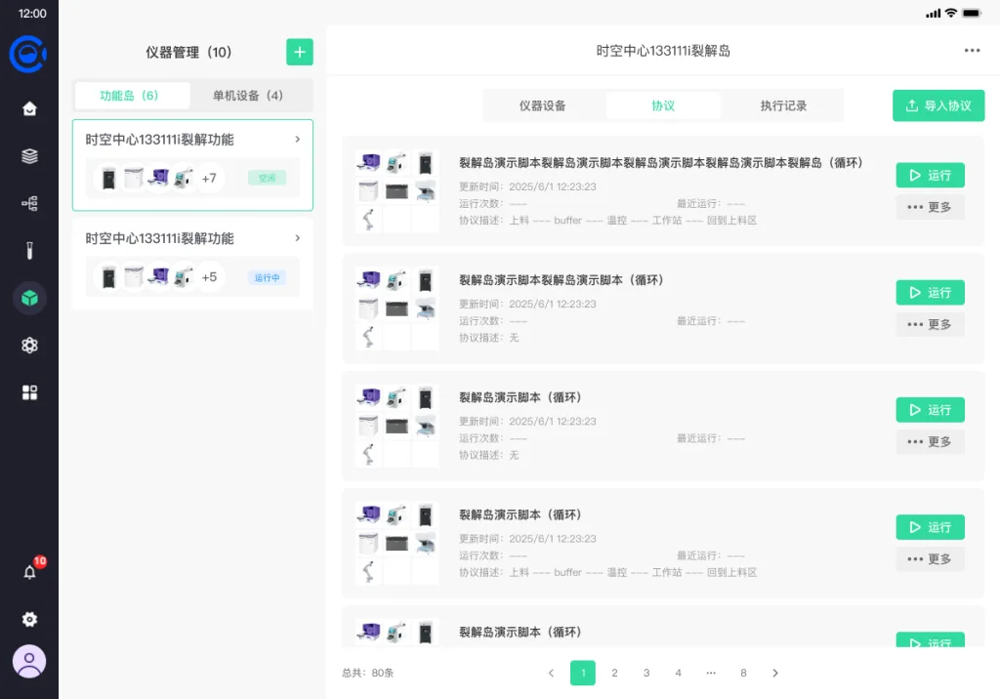
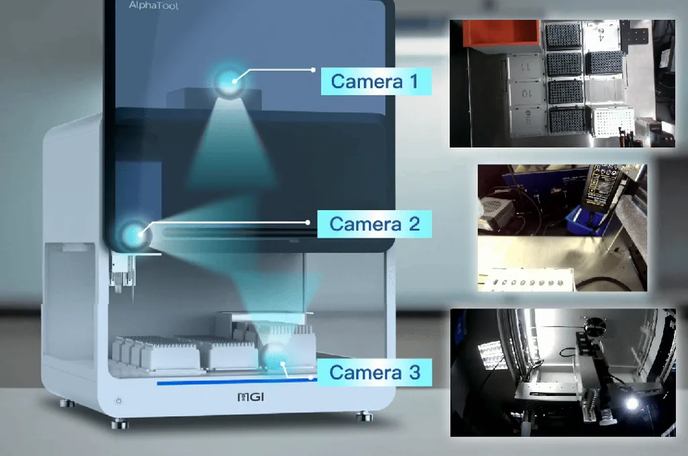
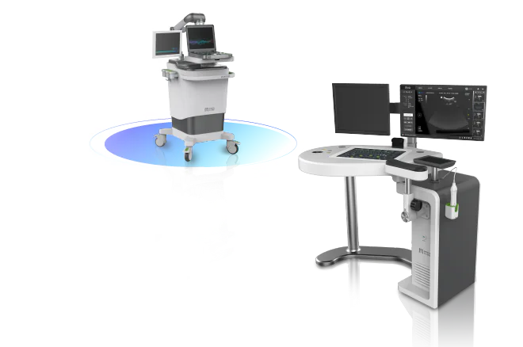

01开源
00:00 00:37
暂时无法播放，可以直接打开或下载短片。

Jason Chen前端工程 · 深圳Jason Chen
工程师，也是构建者。
FRONTEND ENGINEERING · AI & AUTOMATION
你好，我是 Jason，一名在深圳工作的高级前端工程师。从可视化编辑器到实验室自动化，从跨平台设备到 AI 工作流，我关注的不只是界面，更是界面背后真实运转的系统。
思考与构建
好的工程，不止于实现一个界面。我习惯把需求、状态、协议和执行连起来，让每一次设计选择都有来处，每一个交付结果都能被验证。
THE ENGINEERING LOOP
从用户要完成的任务出发，理清场景、约束与验收标准。让需求成为可以讨论、可以验证的共同语言。
INTENT / MODEL / INTERFACE / EVIDENCE
开源作品
把重复遇到的问题，做成可以复用的工具。这里是我持续探索可视化、开发体验与跨平台交互的几个开源项目。
GitHub 公开数据 · 2026.10.31 快照
Flutter-EasySpeechRecognition
基于 Flutter 与 Sherpa-ONNX 的端侧实时语音识别应用，支持按需下载模型、音频流处理与识别结果展示，让声音在本地变成文字。
还有这些探索
个人产品探索
让创作的每一步，连接起来。
围绕 AI 创作探索桌面工作空间，把灵感发现、素材整理与画布编排放在同一条创作路径里。
观看产品短片00:48
工作项目
在华大智造参与实验室自动化、实验工作流与设备应用等产品的研发，覆盖前端架构、跨平台交互、协议编排与设备执行。

Protocol / Execute / Observe
Intent / Tools / State
Connect / Render / Operate华大云影 / MGI
围绕「华大云影+」与「华大云影专家端」，连接线上预约、现场核销、排队管理与报告查看。负责用户端、专家端、运营后台及 H5 的前端开发与发布维护。
关于我
我是一名高级前端工程师，工作与生活在深圳。关注可视化编辑、跨平台应用、设备交互和 AI 工具，也喜欢把项目中的真实问题，沉淀成可以分享的代码与方法。
常用的工具箱
“Not a coder. A builder.”
走过的路
华大智造
围绕实验室、医疗影像与互联设备产品，参与架构、实现、集成与工程实践。
长亮科技
企业产品、公共组件、微前端基础与交付流程。
深圳
业务系统与面向用户的 Web、移动端交互。